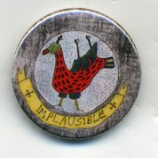

Wednesday, July the 20th, 2011
back to: title, date or indexes

At last! Your chance to announce your unalloyed devotion to Hooting Yard by sporting an exclusive Hooting Yard badge! Hand-crafted by unpaid half-blind orphans in the dank cellars of Pang Hill Orphanage, the badges measure 25mm across and are non-edible, nourishing the spirit rather than the corporeal maw.
How to order:
1. Click the Donate button to your right and send £1.25 per badge to the Keeper of the Hooting Yard Privy Purse. This includes the cost of postage and packing and the PayPal clawback. If you live outside the UK you might wish to add a widow's mite for extra postage.
2. Send me an email telling me your postal address, with the subject heading “Gosh, I am breathless with excitement at the prospect of wearing my Hooting Yard lapel badge”, or words to that effect.
3. Allow sufficient time for Mr Key to drag his weary bones to the post office to complete the transaction.
Note for subscribers: Sensible persons with a Hooting Yard subscription will be receiving their complimentary badge shortly, so need not lift a finger.